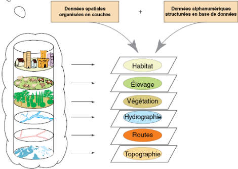

Le système d’information géographique (SIG)
Qu’est-ce qu’un SIG ?
Un système d'information géographique (SIG) est un outil informatique permettant de représenter et d'analyser toutes les choses qui existent sur terre et tous les événements qui s'y produisent.L'information géographique est classiquement représentée sous forme cartographique. Un projet SIG répond à une problématique de gestion du territoire ou d'étude de phénomènes géographiques (qui peuvent aussi être temporels). A ce titre, il s'agit d'un puissant outil d'aide à la décision.

Un Système d’Information Géographique est constitué de 5 composants majeurs :
Matériel, Logiciels,Données,Utilisateurs et Méthodes.

une Base de Données Géographique (BDG) est synthétisée par la représentation ci-dessous.
TOUT SUR LES SIG
La topographie
"est une science géométrique appliquée à la description de la réalité physique immobile environnante..."La géodésie
"est une science qui se propose de définir qualitativement et quantitativement la forme et les dimensions de la terre,..."Modèles de données vecteurs et raster
"Les SIG exploitent deux différents types de modèles géographiques:Le modèle vecteur et le modèle raster..."